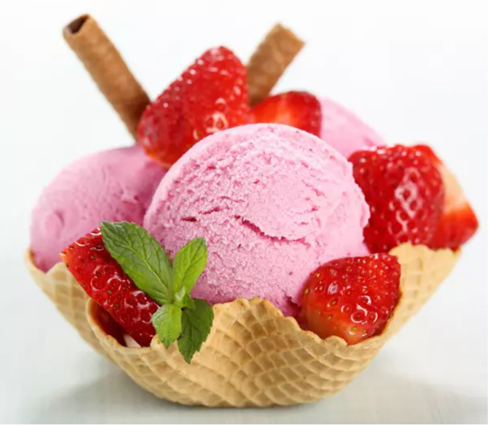
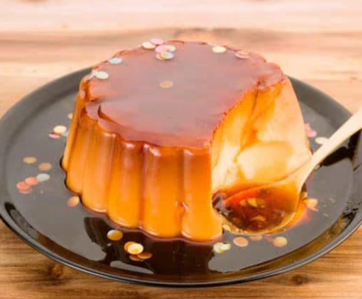
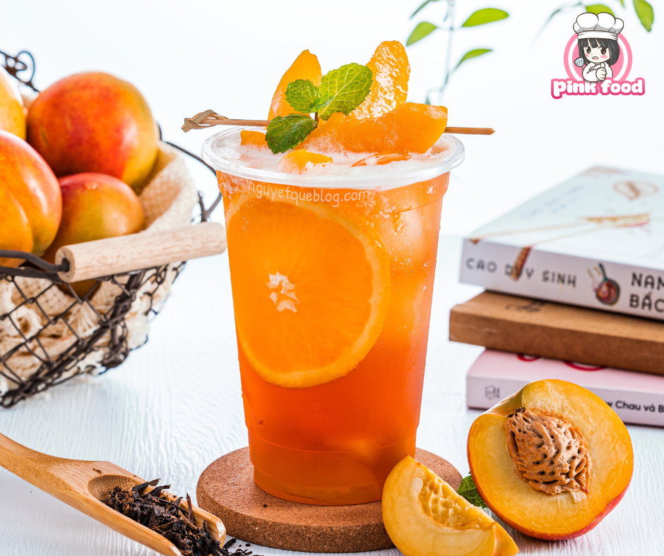

1.Nếu muốn làm trà sữa trái cây từ trà xanh, bạn cho trà xanh vào phin lọc, đặt phin lọc lên cốc, rót nước đun sôi vào phin lọc để ngâm trà trong 5-7 phút cho trà xanh ngấm đều. Nếu muốn làm trà sữa trái cây từ trà đen, bạn cũng có thể làm tương tự
2.Lấy trái cây tươi, bóc vỏ và cắt thành những miếng vừa ăn.
3.Cho sữa tươi không đường hoặc sữa đặc đã được pha loãng với nước (tỷ lệ 1:1) vào ly.
4.Nếu muốn uống trà sữa ngọt, bạn có thể thêm đường trắng hoặc mật ong tùy khẩu vị vào ly, rồi khuấy đều
5.Thêm trái cây đã cắt và đá viên vào ly
6.Rót trà vào ly
7.Nếu thích, bạn có thể thêm trân châu hoặc thạch rau câu vào ly
8.Khuấy đều và thưởng thức trà sữa trái cây của bạn.
Lưu ý: Các loại trái cây khác nhau có hương vị và màu sắc khác nhau, bạn có thể lựa chọn loại trái cây phù hợp với khẩu vị cá nhân để làm món trà sữa trái cây yêu thích của mình
1.Ngâm đậu đỏ trong nước từ 2-3 giờ hoặc qua đêm cho đậu mềm hơn.
2.Đun đậu đỏ với nước cho đến khi đậu chín mềm, đồng thời cho đường vào khuấy đều.
3.Thêm muối vào nồi để tăng hương vị
4.Cho nước cốt dừa vào khuấy đều rồi tắt bếp.
5.Chờ chút để chè đậu đỏ nguội xuống thì mới cho ra ly
Chè đậu đỏ có thể ăn nóng hoặc lạnh tùy sở thích, cắt thêm ít dứa hay thạch nữa cũng rất ngon miệng. Chúc bạn thành công và thưởng thức được món chè ngon nhé!
Số lượng
Giá : đ
Tổng giá món: đ
7. Kem Vani

Nguyên liệu:
500ml sữa tươi không đường
1/2 cup đường
1 muỗng cà phê chiết xuất vani (hoặc 1 que vani)
6 lòng đỏ trứng
1/4 muỗng cà phê muối
Các bước thực hiện:
1.Để các nguyên liệu vào nồi, khuấy đều cho đến khi đường tan hoàn toàn.
2.Đun nồi lửa nhỏ và khuấy đều cho đến khi hỗn hợp sôi.
3.Tiếp tục đun nồi lửa nhỏ khoảng 5 phút, khuấy liên tục đến khi hỗn hợp sệt lại. Sau đó tắt bếp.
4.Trong một bát riêng, đánh tan lòng đỏ trứng với muối.
5.Đổ từ từ hỗn hợp sữa vào bát chứa lòng đỏ trứng, khuấy đều.
6.Đổ hỗn hợp quay trở lại nồi và đun lửa nhỏ, khuấy đều đến khi kem đặc lại. Không được đun quá nhiều hoặc kem có thể đông thành hòn đá.
7.Tắt bếp và để kem nguội rồi cho vào máy xay sinh tố hoặc xay bằng tay cho đến khi kem mịn và sánh.
8.Đổ kem vào hộp đựng và cho vào tủ lạnh để nguội khoảng 4-6 tiếng.
Khi đã làm xong, bạn có thể thưởng thức kem vani trực tiếp hoặc dùng để làm các món tráng miệng như banana split, sundae hay pancake. Chúc bạn thành công và thưởng thức được món kem ngon nhé!
Số lượng
Giá : đ
Tổng giá món: đ
8. Bánh Flan

Nguyên liệu:
1/2 cup đường
2 cups sữa tươi không đường
2 quả trứng
3 quả lòng đỏ trứng
1 muỗng cà phê chiết xuất vani (hoặc 1 que vani)
Các bước thực hiện:
1.Đun nóng đường trong một nồi kính hoặc chảo, khuấy đều cho đến khi đường tan chảy và chuyển sang màu hổ phách.
2.Thêm sữa vào nồi và đun lửa nhỏ, khuấy đều cho đến khi sữa được hòa tan với đường và sôi.
3.Để hỗn hợp sữa nguội khoảng 10 phút.
4.Trộn các quả trứng và lòng đỏ trứng với nhau. Không để lắng lại thành cục và khuấy đều cho đến khi hỗn hợp trở nên sệt.
5.Đổ từ từ hỗn hợp sữa vào hỗn hợp trứng, khuấy đều.
6.Nếu sử dụng vani, thêm chiết xuất vani hoặc que vani vào hỗn hợp trứng, khuấy đều.
7.Lọc hỗn hợp qua một cái rây để loại bỏ bọt trứng và các cục.
8.Đổ hỗn hợp flan vào các khuôn kem hoặc ramekin, đặt chúng trong một nồi sâu lớn chứa nước (như làm bánh sô-cô-la). Nước phải đến 1/2 chiều cao của khuôn. Đảm bảo dòng nước không chảy vào bên trong khuôn kem.
9.Nấu kem flan trong lò nướng ở nhiệt độ 160°C trong 45-50 phút cho đến khi kem chín.
10.Sau khi kem đã chín, để kem nguội và sau đó cho vào tủ lạnh khoảng 3 giờ hoặc qua đêm.
Khi đã làm xong, bạn có thể thưởng thức kem flan trực tiếp hoặc thêm một ít caramel lên trên để tăng thêm hương vị. Chúc bạn thành công và thưởng thức được món kem flan ngon nhé!
Số lượng
Giá : đ
Tổng giá món: đ
9. Trà đào

Nguyên liệu:
2 quả đào
2 túi trà (loại bạn thích)
\
Đường hoặc mật ong tùy khẩu vị
Nước đun sôi
Thêm đá và lá bạc hà nếu muốn
Các bước:
1.Rửa sạch đào, cắt đôi và lấy hạt ra.
2.Cho đào đã cắt vào máy xay hoặc máy ép để lấy nước ép đào.
3.Pha trà theo hướng dẫn trên bao bì.
4.Trộn nước ép đào và trà vừa pha lại với nhau.
5.Nếu muốn thêm đường hoặc mật ong, hãy cho vào và khuấy đều.
6.Thêm đá và lá bạc hà để có một cốc trà đào thơm ngon và mát lạnh.
Chúc bạn thành công và thưởng thức món trà đào ngon miệng!